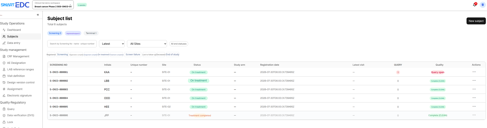
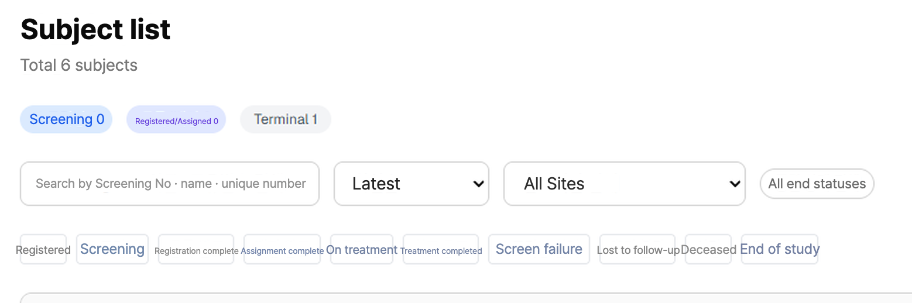
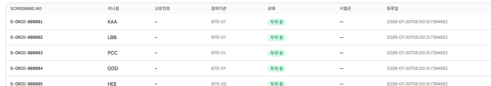
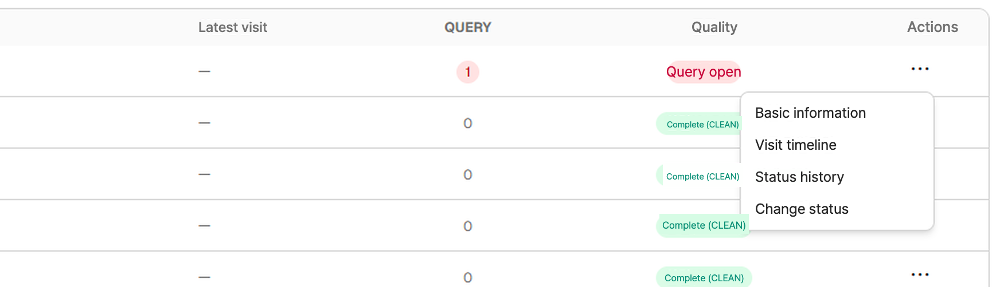
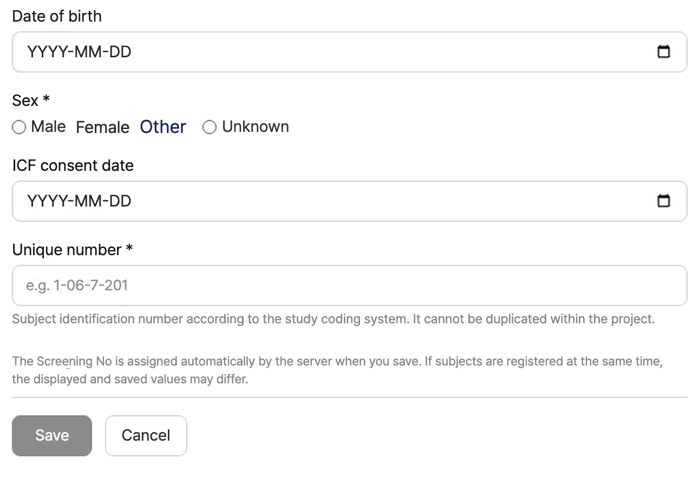
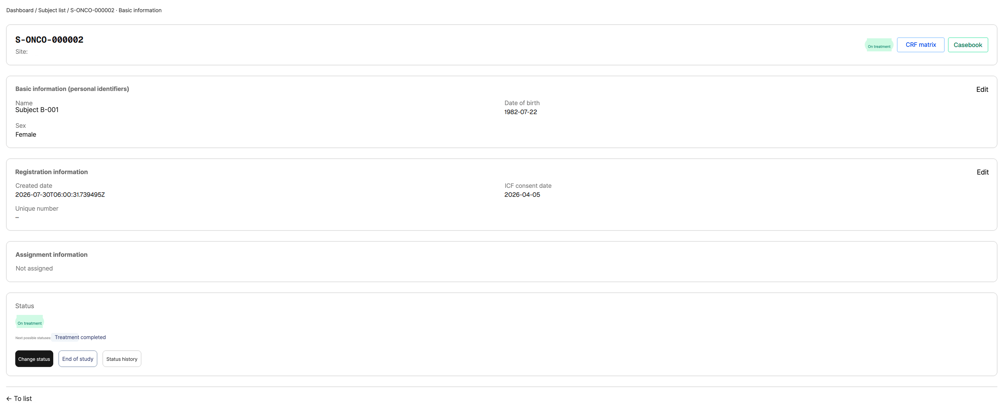
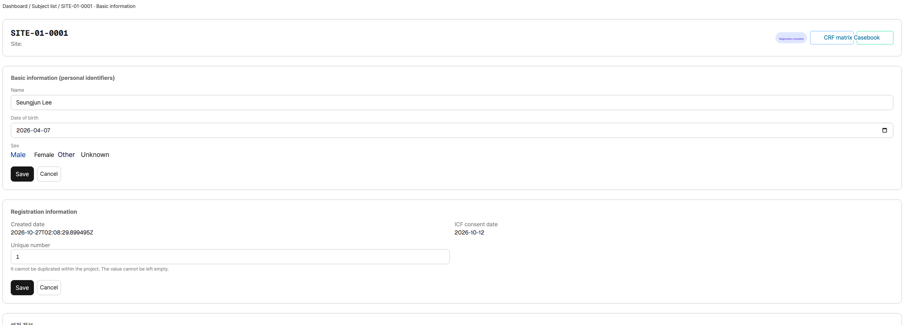
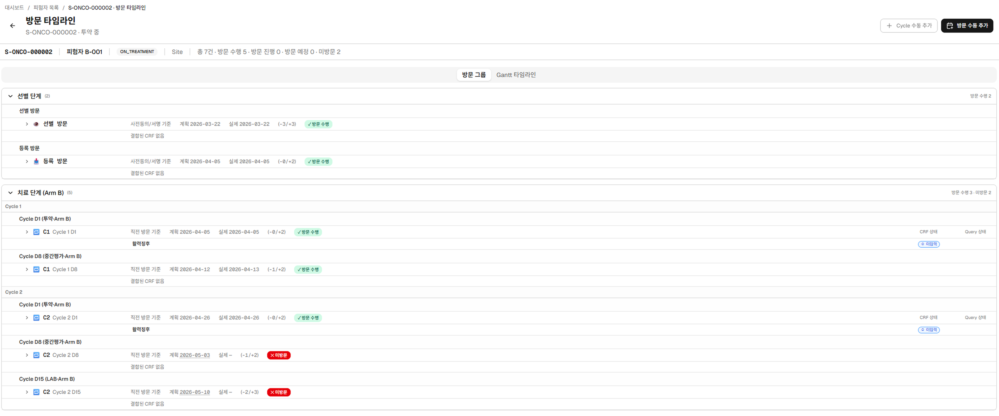
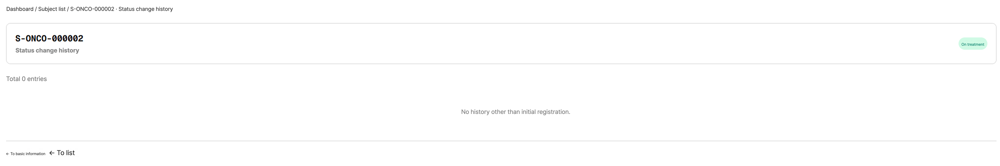
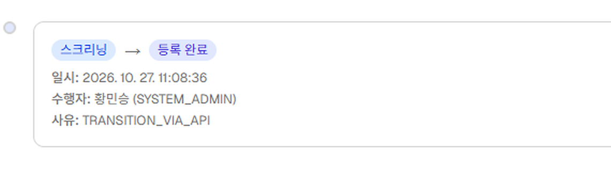

Subjects
SCR-SUBJ-001·002·003·004·009·017 · List · Register · Details · Change status
Subject list
- 1.1Screen layout
- 1.2Search · sort · filter
- 1.3Table columns and row actions
- 1.4Register a new subject
1.1Screen layout
Overview
This screen shows all subjects registered in the project. It is the starting point for subject tasks. From this list you register subjects, change their status, open visits, and enter data. For a role that is responsible only for its own Site, only subjects of that Site are shown.
Screen guide

New subject — Register a new subject 1.4. This button is hidden if you do not have registration permission, or if the project is closed or archived.
Search · Sort · Site · All end statuses — Four tools to narrow the list 1.2.
Status filter — Select one of 10 statuses to filter the list 1.2.
Use Study Operations > Subjects in the left menu to return to this list at any time.
Total N subjects — The total number of subjects after the filters are applied. It may differ from the number of rows on the current page (20 per page).
Three summary badges — Screening, Enrolled/Assigned, and Terminal. See the precautions below.
Table — One row per subject. Select a row to go to that subject's screen 1.3.
At the top of the screen, you can switch between Workspace and Project. When the project changes, the list changes too.
Precautions
Must check Data corruption · Form cannot be completed
- • The three summary badges do not add up to the total. Subjects in Registered and On treatment status are not counted in any of the three badges. For example, the screenshot shows 5 of 6 subjects On treatment, yet the “Enrolled/Assigned 0” badge reads 0. Check the number of subjects with Total N subjects and the status filter.
1.2Search · sort · filter
Overview
You can narrow the list in five ways, and they apply together. When you change a condition, the page number returns to page 1, and the total number of subjects is recalculated.
Screen guide

Search — Find subjects by Screening No, name, or unique number. The search runs automatically a short time after you stop typing.
Sort — Choose from Latest, Screening No, Registration date, or Status. The default is Latest.
Site — Show only subjects of a specific Site. This appears only when you can access two or more Sites. For a role responsible only for its own Site, the badge Fixed to my Site appears instead.
All end statuses — Select or clear all five Terminal statuses (Screen failure · Treatment completed · Lost to follow-up · Deceased · End of study) at once.
Status filter — Select the 10 statuses one at a time. If you select several, subjects matching any one of them are shown. Selected chips are filled with color.
Total N subjects is the total number of subjects that match the conditions currently applied.
The three summary badges count only the rows loaded on the current page. Registered and On treatment statuses are not included in any badge (see 1.1 precautions).
The whole area below the title is the filter area. To clear a condition, select the selected chip again.
Precautions
Easily misunderstood behavior
- • You can search by name. However, the table shows initials instead of names, because names are personal data and the list seen by all roles should not include them.
1.3Table columns and row actions
Overview
The table has 11 columns. The left half shows who the subject is (identity, Site, status). The right half shows what state the subject is in (visits, Query, quality). In the far-right Actions column, you go to that subject's screen.
Screen guide


⋯ — Opens the row action menu. The menu opens in place, so the row does not move.
The menu has four items; see the list below. Change status cannot be selected for a subject in a Terminal status, or if you do not have permission.
Column order — Screening No · Initials · Unique number · Site · Status · Study arm · Registration date. Initials are shown instead of names.
Screening No is an ID number the system assigns automatically. Unique number is a separate ID that people enter according to the study coding system. If there is no value, — is shown.
Query — Number of unresolved Queries. If there is one or more, it appears in red.
Quality — One of five statuses: Awaiting verification · SDV completed · Query open · Query answered · Complete (CLEAN).
The Latest visit column currently shows — in every row. Check visit dates in the visit timeline 2.3.
Four items in the ⋯ action menu
- • Basic information — Subject details screen 2.1
- • Visit timeline — All planned and completed visits 2.3
- • Status history — Records of status changes 3.3
- • Change status — Window to select the target status 3.1
Precautions
Easily misunderstood behavior
- • Selecting a row directly and selecting “Basic information” in the menu take you to different screens. Selecting a row opens the Patient Profile, which gathers several areas on one screen. “Basic information” in the menu opens the details screen 2.1, which focuses on personal information and registration details.
1.4Register a new subject
Overview
Register a new subject. You must fill in every item marked with an asterisk before you can save. The status created depends on whether you enter the ICF consent date. If you already have the signed consent, enter it here at the same time. This saves one status change.
Screen guide


Assigned Site * — The Site the subject belongs to. This appears only when your access spans two or more Sites. If you have access to only one, the system assigns it automatically.
Name * — Personal identifying information. It is not shown in the list.
Initials * — Short form shown in the list. It is not created automatically from the name, so enter it yourself.
Date of birth — Optional. You cannot select a date after today.
Sex * — Select Male · Female · Other · Unknown.
ICF consent date — Optional, but it decides the status created. If you enter it, the subject is created as Screening. If you leave it blank, the subject is created as Registered. You cannot enter a date after today.
Unique number * — Identification number according to the study coding system. Up to 50 characters, and it cannot be duplicated within the project.
Save — Stays faded until all required items are filled in. If you entered the ICF consent date, you go to that subject's details screen after saving. If you left it blank, you go to the list.
Header notice — The system assigns the Site based on your access. You select it yourself only when your access spans several Sites.
The banner shows in advance the status to be created. When you enter the ICF consent date, the banner text changes to Screening.
Below the selection field, a notice explains why the Site must be specified.
Cancel — If you have entered anything, the system first asks whether to discard it.
A notice below the unique number field says it cannot be duplicated. The system checks for duplicates when you save, so it does not tell you while you type.
Screening No is not an input item — the system assigns it automatically when you save.
Precautions
Must check Data corruption · Form cannot be completed
- • A unique number may already be used at another Site, and you cannot see that while you type. Roles responsible only for their own Site cannot see subjects of other Sites in the list. If saving is rejected as a duplicate, check the study coding system and enter a different value.
Subject details
- 2.1Screen layout
- 2.2Edit basic information · registration information
- 2.3Visit timeline
2.1Screen layout
Overview
A screen that stacks one subject's personal information, registration details, assignment, and status from top to bottom. The three actions that change status are also grouped at the bottom of this screen.
Screen guide

Basic information (personal information) > Edit — Edit name, date of birth, and sex 2.2. If you do not have permission, this link is not shown.
Registration information > Edit — Edit the unique number 2.2.
Change status — Opens the target status selection window 3.1. You cannot select it if there is no status you can move to, or if the subject is fully locked.
End of study — Goes to the End of study screen, which is used only for EOS 3.2. Shown only when the subject is On treatment or Treatment completed and you have permission.
Status history — View the records of status changes 3.3.
You can return to the list from the navigation path. ← To list at the bottom of the screen goes to the same place.
The status badge at the top has the same value as the badge in the Status card below. When a lock is applied, a padlock badge is also shown.
CRF matrix · Casebook — Other screens for that subject's CRF entry status and data output. They are not covered in this volume.
Next possible statuses — Transitions the system has calculated as possible. You cannot change to a status that is not listed here.
Assignment information — Shows Not assigned before randomization. After assignment, the study arm and assignment number are shown.
Unique number shows — for subjects registered before it became a required item. You can fill in the value in Edit 2.2.
Precautions
Easily misunderstood behavior
- • The Site at the top may appear blank. This happens when the details screen does not receive a Site code. It does not mean the subject has no Site. Check the subject's Site in the Site column of the list.
2.2Edit basic information · registration information
Overview
Basic information and Registration information are separate cards, and each is saved separately. While you edit one, the other stays in view mode. If you changed both, you must press Save twice.
Screen guide

Name — Cannot be left blank. If it is empty, Save appears faded.
Date of birth — Select a date.
Sex — Select Male · Female · Other · Unknown.
Save (Basic information) — Applies only the three personal information items.
Unique number — Identification number according to the study coding system. It cannot be left empty — saving with it blank is rejected.
Save (Registration information) — Applies only the unique number.
Cancel — Discards the changes and returns only that card to view mode.
Registration information has the same Cancel button.
Created date and ICF consent date are read-only — they do not become input fields even in edit mode.
A notice below the unique number field says both that it cannot be duplicated and that it cannot be left empty.
The header card does not change while you edit — the status badge and navigation buttons stay in place.
Precautions
Must check Data corruption · Form cannot be completed
- • Only roles that have both view and edit permission for personal identifying information can edit name, date of birth, and sex. The Principal Investigator (PI) can view these values but cannot edit them, so no edit link is shown. Unique number can be edited with edit permission alone.
2.3Visit timeline
Overview
A screen that groups one subject's visits by stage. In one row you can check the planned date and actual date, the allowed window, whether the visit was completed, and the entry status of linked CRFs. The visit volume covers visit management overall. This section describes only what you see when you come in from a subject.
Screen guide

Add visit manually — Adds a visit that was not in the plan. Not shown for subjects in a Terminal status.
Add Cycle manually — Expands the next cycle of a cyclic visit group all at once. Shown only in projects that have cyclic visit groups.
Visit group / Gantt timeline — Switch the view. The default is the visit group, where you can collapse and expand each stage.
Use the navigation path or the back arrow at the top left to return to where you came from.
Summary line — Shows Screening No · Unique number · Name · Status · Site, together with the totals Total N · Completed · In progress · Scheduled · Not visited.
Stage header — The unit that groups visits, such as a screening stage or a treatment stage. The number in parentheses is the number of visits in that stage. If the stage has a study arm, it is shown next to it.
One visit row — Shown in this order: reference (the date the count starts from) · planned date · actual date · allowed window · completion status.
If a CRF is linked to the visit, its name and entry status follow below. If no CRF is linked, No linked CRF is shown.
A visit that is past its planned date but not completed is shown in red as ✗ Not visited, and its planned date is underlined.
Precautions
Easily misunderstood behavior
- • This screen belongs to the visit area and can be opened from both the subject list and data entry. The back arrow at the top left returns to a different place depending on where you came from.
Change status
- 3.1Select target status
- 3.2End of study
- 3.3Status change history
3.1Select target status
Overview
Shows only the statuses that can be reached from the current status. The options are filtered by two factors, the current status and your role, so they may look different for different people. If the list of options is empty, there is no status to move to, or you do not have permission.
Screen guide

On treatment → Treatment completed — When selected, five reasons for ending treatment appear. Only Normal completion is processed directly in this window. The other reasons go to the early-termination screen, where visit schedule cleanup follows.
On treatment → Deceased — Goes to the screen used only for recording a death.
On treatment → Lost to follow-up — Goes to the screen used only for lost-to-follow-up processing.
On treatment → Consent withdrawn — Goes to the screen used only for consent withdrawal. Withdrawal requires an electronic signature.
Run status change — Stays faded until you select a target status. If you select a transition marked with the Dedicated screen badge, the button name changes to Go to dedicated screen.
The top of the window shows the target subject and the current status. Check here that it is the right subject.
Two badges appear to the right of each option. Terminal means the transition cannot be reversed (selecting it shows a warning in the window). Dedicated screen means the transition is not completed in this window but on a separate screen.
Cancel — Closes the window without changing anything.
Selecting outside the window or selecting close has the same effect.
Precautions
Must check Data corruption · Form cannot be completed
- • End of study (EOS) is not in this window. It is performed only on its dedicated screen, and the End of study button on the details screen is the only entry point 3.2. Also, if a subject is locked, all Terminal options are shown faded, so you must release the lock first.
3.2End of study
Overview
The screen that finally ends a subject's participation in the study. It can be performed only from On treatment or Treatment completed status. Electronic signature is required depending on the project's signature policy. This change cannot be reversed, so check the date and reason before you run it.
Screen guide

End of study date * — Required. You cannot select a date after today. If you enter a date earlier than the ICF consent date, a message asks you to confirm.
End reason * — Required. It is recorded as entered in the status change history, so state the facts, for example “Follow-up ended”.
Run end of study — Stays faded until both required items are filled in. If the project requires electronic signature, the signature window appears as soon as you select it, and the end is processed only after you sign.
Subject summary — Shows Screening No · current status · Site · ICF consent date.
Blue notice — A preview that the signature window will appear when you run it, if the signature policy is on. This notice is not shown in projects without a signature policy.
Gray notice — Explains that end of study cannot be reversed, is recorded permanently in the status change history, and blocks data entry from then on.
Cancel — Performs nothing and returns to the place you came from.
Precautions
Must check Data corruption · Form cannot be completed
- • End of study cannot be reversed, and it blocks further data entry. Check first that no unresolved Query and no unentered CRF remains. The system rejects the end for a locked subject, so release the lock first.
3.3Status change history
Overview
A screen that shows, in time order, when, by whom, and why the subject's status changed. It is audit trail data, so records cannot be edited or deleted; you can only view them.
Screen guide


← To basic information — Returns to that subject's details screen 2.1.
← To list — Returns to the subject list 1.1.
Total N entries — The number of recorded status changes.
If there are no records, “No history other than initial registration.” is shown. This means the status has not changed since registration.
The badge at the top is the current status. It should match the status in the last record below.
Card header — status before change → status after change. A transition made past a lock is also marked with a Lock Override badge.
Date and time — The time the transition was made.
Performed by — The name and role are recorded together.
Reason — The reason entered when making the transition. For transitions the system performed automatically, a code showing the path may be recorded instead.
Precautions
Easily misunderstood behavior
- • The current status may be On treatment while the total shows 0 entries. This is not a display error. It means no status change was recorded for that subject. If you need to check how the transition happened, also view the Audit Trail.